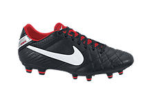

The World Cup
-The Greatest Tournament in the World
Soccer is one of the most popular sports in the world. It is played in almost every country of the world. The World Cup comes every four years. It brings together all of these countries to compete in one of the biggest tournaments in the world. Click here to learn more about the World Cup.
Even though it is one of the most popular sports in the world, it is not as popular in the United States as it is in other countries. The sport is growing in the United States though. It is easy to see this by the amount of people joining different soccer clubs around the country. Also, more professional soccer teams are starting up in different cities to compete against each other in Major League Soccer(MLS).
I play simply because of love for the sport. It is challenging because you can only use your feet to kick or dribble the ball. This is much harder to do because you do not use your feet to manipulate objects as often as you use your hands. This makes it hard, but very fun. I play club soccer and I play for my high school. Both of these leagues offer different types of competitors.
For instance, the club soccer league offers the chance to compete against people your own age. The high school league offers the chance to compete against any ages in high school. This means that you could be playing against people that are younger or older than you. It also means that they could be more or less experienced than you in the game of soccer. This is good training for if you ever want to join a higher league to play in.
"The rules of soccer are very simple, basically it is this: if it moves, kick it. If it doesn’t move, kick it until it does." -Phil Woosman
Here are the different levels of soccer leagues.
- Recreational Soccer
- Travel Soccer Clubs
- High School Soccer
- College Soccer
- Semi Professional Leagues (such as NASL)
- Major League Soccer (MLS)
- Higher professional leagues (such as the English Premiere League)
If you are interested in playing soccer, a good way to start is to buy a pair of cleats. To see different styles of cleats click on the picture.

The next step is to start playing soccer. Pick up games are when friends, coworkers, or just random people show up at one place to play a game of soccer. Teams are usually picked by those who organized the event or by random assignment. Here is a good place to find a pick up game near you.